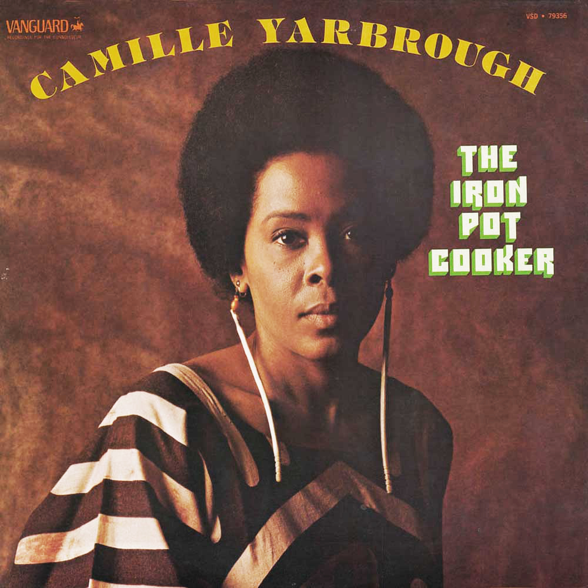

Camille Yarbrough
Dancer, musician, actress, Black activists, poet, television producer and author.

Camille Yarbrough: 1999 – The Iron Pot Cooker Urban / R&B: Soul album.
Camille Yarbrough is one of those rare talents who rips straight to the heart with her music. The album is a heavy black experience piece. It’s not for the faint of heart or for those who’d like to drift through life with rose colored shades over their eyes.
Ceaser Williams, New Times
Timeline
- 1938 born January 8, Chicago, the seventh of eight children of an African-American family.
- 1953 after school started working at the Blue Angel, a Calypso club in Chicago.
- 1954 moved to New York and trained and toured as a dancer, with The Katherine Dunham Co.
- 1955 joined The Katherine Dunham Co, Los Angeles. The Company toured America, Australia, Korea, Japan, Europe, New Zealand and Vietnam, for a total of eighteen months before Yarbrough returned to Chicago to work at The Blue Angel again.
- 1960 joined The Katherine Dunham Co for a Paris tour.
- 1961 moved to New York, danced in the Broadway show Kwamina
- 1969 performed in the play God’s Trombone/Trumpets.
- 1970s & 80s Tales and Tunes of an African American Griot, toured USA.
- 1971 One-woman/spoken word show: Tales and Tunes of an African American Griot.
- 1971 co-starred in To Be Young, Gifted and Black The Beast Story and Sambo.
- 1971 a small part in the original Shaft movie, as Shaft’s sister Dina Greene. Yarbrough has also shared the stage or screen with Morgan Freeman, James Earl Jones, Joe Morton, Claudia McNeil, Al Freeman, Jr. and Kevin McCarthy among many others.
- 1971 published articles: ‘Today I Feel Like I Am Somebody’a journal of touring with To Be Young, Gifted and Black, The New York Times.
- 1972–3 acted on daytime television soap operas Search for Tomorrow and Where the Heart Is.
- 1975 Celebrating love/Take Yo Praise recorded for Iron Pot Cooker, Vanguard Records (recording).
- 1979 Cornrows (book). 13 editions published between 1979 and 2010.
- 1980 published articles: ‘The Old Seed by Camille’, ‘Black Dance In America: The Deep Root’ and ‘The Strong Branch’, in The Black Collegian, The Journal of African Civilization.
- 1987 The Little Tree Growing in the Shade (book). 2 editions published between 1987 and 1996
- 1988 The Shimmershine Queens (book). 8 editions published between 1988 and 1996.
- 1994 Tamika and the Wisdom Rings (book). 3 editions published between 1994 and 2004.
- 1994 enthroned by ABLADEI, Inc. (Ghanian), GA as Naa Kuokor Agyman I Queen Mother to the late Dr. John Henrik Clarke and she is the founder of the Throne House of Harriet Tubman.
- 1994 enthroned in the village of Agogo-Asanti, Ghana as Nana Tabuoa Tonko II.
- 1999 Fatboy Slim sampled Take Yo Praise in his track Praise You as the main sampled piece. It reached No.1 in the UK charts and high in Canada, Ireland, New Zealand and the US. It has since been used in movies, Wimbledon, commercials, several tv shows.
- 1999 Praise You was featured in the movie Cruel Intentions.
- 2015 Bob Law Night Talk Live WBAI
- 2014 Ride from her soon to come autobiography UNBELTED.
- 2017 Fatboy Slim’s Praise You used for a UK Lloyds Bank advert, recorded by Hannah Grace and the London Contemporary Voices Choir.
- More to follow